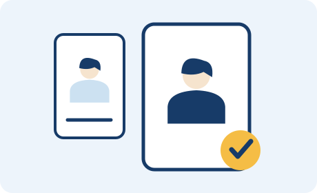
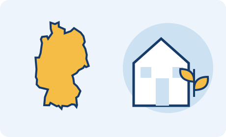

朝日理子
IU | University of Applied Sciences for International Students
Soziale Arbeit (B.A.)／社会福祉・社会教育 デュアル学士
プロフィールを見るGERMANY STUDY LAB

現役生だから話せる、留学のリアル。
ドイツの大学で学ぶ学生と、これから留学を目指すあなたをつなぐ。
出願から現地での暮らしまで、実体験を次の一歩へ。
留学を、一部の人の特別なものにしない。
公式ニュースはDAAD日本の発表へのリンクです。募集条件は各発表元でご確認ください。
ドイツの大学で学ぶ現役生に、出願・語学・授業・現地生活の経験を聞けます。
IU | University of Applied Sciences for International Students
Soziale Arbeit (B.A.)／社会福祉・社会教育 デュアル学士
プロフィールを見る


出願準備・語学学習・大学生活・住居探し。
それぞれの現役学生が経験したドイツ留学のリアルを、ZoomやLINEで相談できます。
25 USD
約3,800円
1回40分
出願や現地生活の疑問を、現役学生と直接話して整理できます。
お試し10日間
5,000円
通常30日間
15,000円
現役学生1名と、期間中LINEでじっくり相談できます。
Zoom面談の円換算額は、為替レートやカード会社によって変わります。
予約受付は準備中です。現役学生のプロフィールから、Zoom・LINEそれぞれの相談内容をご確認いただけます。

現役生を選ぶ大学・専攻・経歴と相談できるテーマを見て、自分の疑問に合う相手を選びます。各プロフィールの受付状況をご確認ください。申し込み前の条件確認と、サービス開始後の相談を分けてご案内します。
ドイツで学ぶ現役生が発信する、出願・住まい探し・留学生活の体験談。記事の続きは本人のnoteで読めます。
記事を読み込み中です…
現地で学ぶ学生の体験談を近日公開予定です。
留学準備や大学生活の情報をお届けします。
ドイツでの暮らしに関する記事を準備中です。
国・お金・進学の3つの入口から、必要な情報へ。

01 / ドイツ留学の基本
初めての海外生活でもイメージできるよう、家計・買い物・住まい・保険を順に説明します。
02 / ドイツ留学の基本
返済が必要か、誰が応募できるか、何の費用を支援してもらえるか。奨学金の探し方を説明します。
03 / ドイツ留学の基本
日本の高校から大学に進むには？ 学べる内容、出願条件、語学と学費を、進学準備の順番で説明します。
イラストは各テーマのイメージです。大学・制度・商品を特定する写真ではありません。
大学や進学制度のガイドから、毎日3件を紹介します。
都市を選び、大学を見つける。
大学を押すと、その大学の登録学生を表示します。
青い枠線がドイツの国境（概略）
収録都市 登録学生の大学がある都市（数字は人数）
州政府・大学公式サイトで確認した大学を収録しています。
点は都市中心の目安で、キャンパスの位置ではありません。
地図：© OpenStreetMap contributors · 都市座標：© BKG 2026 · dl-de/by-2-0（VG250・GN250を選択・座標変換） · データ出典
学士・修士、英語・ドイツ語での進学、社会人からの挑戦。
共同運営者3名とAinaさんが、それぞれの経験をお伝えします。
現役学生4名を表示しています。
IU | University of Applied Sciences for International Students
Soziale Arbeit (B.A.)／社会福祉・社会教育 デュアル学士
日本の大学卒業後、IT系企業に約3年半勤務して渡独。ドイツ語をゼロから学び、現在はミュンヘンで大学に通いながら働き、児童養護施設でインターンシップをしています。
東京で、支援を必要とする子どもたちの学習支援にボランティアとして関わったことから、社会問題や若者の教育への関心が深まりました。ドイツで語学を学びながら進学という選択肢を見つけ、社会福祉・社会教育の分野に進みました。
前職や年齢に関係なく、新しい場所で新しい道を選ぶことはできます。「道は歩いたあとにできる」。大学進学に限らず、ワーキングホリデー、現地の語学学校、生活費や学費など、私自身が実際に経験したことをお伝えします。
Zoom予約受付は準備中です。
オスナブリュック大学
Conflict Studies and Peacebuilding 修士課程
平和学を学ぶ修士課程の学生。ベルリンの難民・移民支援団体と、ボンの国連事務局でインターンシップを経験。note「留学するならドイツ」を執筆しています。
学部時代から戦争と平和を進路のテーマにしていました。英国での短期留学で出会う人々の背景について考え、経済的ゆとりや国籍に関わらず学問と留学が開かれていること、グローバルサウスを含むさまざまな国の人と学ぶことを大切にして、ドイツ留学を決めました。
書類出願や住居関係、ビザ申請・延長で困難が生じた経験を、少しでも共有できれば幸いです。大学生活やインターンシップについても、私自身の経験をお伝えします。
Zoom予約受付は準備中です。
Technical University of Hamburg
B.Sc. Engineering Science
日本の高校でIBを取得し、卒業後にドイツの工科大学へ進学。大学生活・生活費・住居探し・一部の出願について、自身の経験をお伝えします。
小学5年生の時に父の仕事の関係でドイツに暮らし、帰国後もドイツに戻りたいと思っていました。高校生の時に、エンジニアリングを英語で学ぶことを決めました。
日本の高校を卒業してからの出願や住居探しには苦戦しましたが、現在はドイツの工科大学で学んでいます。留学を迷っている、興味のある方の一歩を後押しできれば幸いです。
Zoom予約受付は準備中です。
University of Bayreuth（バイロイト大学）
M.Sc. Global Food, Nutrition and Health
日本の大阪大学で看護学や公衆衛生を学び、現在はドイツのUniversity of BayreuthでGlobal Food, Nutrition and Healthの修士課程に在籍しています。大学探し、必要書類の準備、TOEFL対策など、約半年かけて出願準備を進めました。渡独後はドイツ語の学習を続け、telc Deutsch B1を取得。住居探し、Anmeldung、ビザ・滞在許可、銀行口座、保険などの手続きも経験しています。
以前から海外で学んでみたいという気持ちがあり、日本の大学院への進学後、ドイツの英語修士課程への進学に挑戦しました。
留学前は私自身も、大学選びや出願、英語力、現地での生活など分からないことがたくさんありました。そのため、これから留学を考えている方が気軽に相談できるような存在になれればと思っています。
Zoom予約受付は準備中です。
出願を迷っている段階から、相談方法・料金・利用上の注意まで。
エージェントは手続き支援、公式窓口は制度の確認、SNSは幅広い体験の情報収集などに利用できます。留学ラボでは、プロフィールを見て選んだ現役生の経験を個別に聞き、大学選びや準備の判断材料を得られます。対応内容は各サービスで確認してください。
はい。大学・専攻を比較している段階や、留学自体を迷っている段階でも相談できます。語学準備、授業、生活費など、自分が確認したいテーマに対応する現役生を選んでください。
大学・専攻・授業言語・経歴・相談テーマから選べます。すべての大学・学部の現役生が登録しているわけではありません。大学ガイドや公式窓口も参考にし、近い経験を持つ学生の相談範囲を確認してください。ドイツの大学に在籍し、志願者を助けたい方は現役生登録のお問い合わせからご連絡ください。
本人が経験した語学の準備方法、出願・選考の体験、授業や課題の負担、住居探し、生活費、到着後の手続きなどです。学生ごとのプロフィールに相談できるテーマを掲載しています。未経験の制度・専攻について答えを保証するものではありません。
出願・ビザの代行、責任を伴う申請書類の添削・確認、合格・奨学金・ビザ取得の保証は行いません。大学や公的機関の判断が必要な条件は、その公式窓口へ確認してください。
質問を整理し、選んだ現役生に個別に経験を聞く時間への料金です。情報収集には無料の公式資料やSNSも利用できます。目的に合わせて相談が必要か検討し、料金と対応範囲を確認してからお申し込みください。
Zoomは1回40分、25 USD（約3,800円目安）です。円の請求額は決済時の為替・カード会社等で変わります。予約ページで支払方法と条件をご確認ください。受付準備中の学生は、予約開始後に手続きできるようになります。
ハンガリー版と同様、Zoomは開始24時間前まで日程変更・キャンセル可能です。24時間以内のキャンセルと無断欠席は返金対象外です。予約後の確認メールにある手続きリンクを使用し、支払前に予約画面の条件も確認してください。面談は40分です。
現役生1名を選び、10日間5,000円または30日間15,000円で相談します。開始日・終了日は運営の案内で確認します。申込だけでは決済や相談開始は確定しません。LINE相談の案内をご確認ください。
LINE相談の申込前の事前質問は受け付けていません。相談は案内された開始日から、選択した期間内に行います。授業・試験・時差により返信に時間がかかり、即時返信・24時間対応は行いません。サービスや申込方法の確認は運営へのお問い合わせをご利用ください。
身分証、口座情報、申請書類の原本・コピーなどは、不要に送らないでください。書類の正式審査や専門判断は対象外です。変更・キャンセル条件は申込後の案内を確認し、同意してからお支払いください。
サービスの確認、相談後の連絡、現役生登録、提携・取材について受け付けています。
相談の予約・申込は各プロフィールの案内からお願いします。LINEの相談前の事前質問は受け付けていません。
この画面だけでは送信されません。Gmailの作成画面を開いた後、ご自身で送信してください。
Gmailで下書きを開く メールアプリで開くGmailを利用するにはログインが必要です。開かない場合は、メールアプリで開くか、germany.info@hungarystudy.org 宛に上記の件名・本文をコピーして送信してください。
留学を、一部の人の特別なものにしない。
お金や環境が理由で、
「判断する前に諦める」学生を減らしたい。
経験した人の一次情報を、これから挑戦する人へ。
自分に合う道を考えるきっかけを、ドイツ留学ラボから。
 写真：Christian Wißler, Hochschulmarketing / Public domainバイロイト大学
写真：Christian Wißler, Hochschulmarketing / Public domainバイロイト大学 写真：MaxEmanuel / CC0ミュンヘン工科大学（TUM）
写真：MaxEmanuel / CC0ミュンヘン工科大学（TUM）